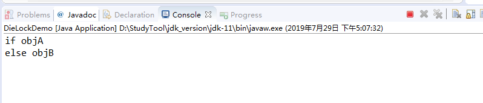

今天我们聊一聊多线程，谈到多线程，很多人就开始难受，这是一个一听就头疼的话题，但是，我希望你在看完这篇文章后能对多线程有一个深入的了解。
那么，首先我就举一个电影院卖票的例子来模拟多线程。
复仇者联盟4上映的那段时间电影院那可是门庭若市啊，那么我们假设现在有一个电影院正在上映复仇者联盟4，共有100张票，而它有三个售票窗口，我们来模拟一下这个电影院的售票情况。
首先创建SellTicket类继承Thread：
public class SellTicket extends Thread {
@Override
public void run() {
// 定义100张票
int tickets = 100;
while (true) {
if (tickets > 0) {
System.out.println(getName() + "正在出售" + (tickets--) + "张票");
}
}
}
}然后编写测试代码：
public class SellTicketDemo {
public static void main(String[] args) {
//创建三个售票窗口
SellTicket st1 = new SellTicket();
SellTicket st2 = new SellTicket();
SellTicket st3 = new SellTicket();
st1.setName("窗口1");
st2.setName("窗口2");
st3.setName("窗口3");
st1.start();
st2.start();
st3.start();
}
}现在我们运行程序，控制台输出信息如下：
...
窗口1正在出售第100张票
窗口3正在出售第100张票
窗口2正在出售第100张票
窗口3正在出售第99张票
窗口1正在出售第99张票
窗口3正在出售第98张票
窗口2正在出售第99张票
窗口3正在出售第97张票
窗口1正在出售第98张票
窗口3正在出售第96张票
窗口2正在出售第98张票
...那么问题出现了，每张票都被卖了三次，很显然这是不符合事实的。那么问题就出现在这个tickets变量的定义位置上，如果将tickets变量定义在了run()方法内，很显然三个线程就都具有了100张票，那么现在来改进一下我们的程序：
public class SellTicket extends Thread {
// 定义100张票
private int tickets = 100;
@Override
public void run() {
while (true) {
if (tickets > 0) {
System.out.println(getName() + "正在出售第" + (tickets--) + "张票");
}
}
}
}这次我们将tickets定义为成员变量，其它代码不作修改，然后重新运行程序：
...
窗口1正在出售第100张票
窗口3正在出售第100张票
窗口2正在出售第100张票
窗口3正在出售第99张票
窗口1正在出售第99张票
窗口3正在出售第98张票
窗口2正在出售第99张票
窗口3正在出售第97张票
窗口1正在出售第98张票
窗口3正在出售第96张票
窗口2正在出售第98张票
窗口3正在出售第95张票
...很显然，这次又出现了问题，三个窗口仍然卖出了同一张票，那么这是为什么呢？原因很简单，tickets虽然作为了成员变量，但是我们创建了三个线程，这样每个线程就都会拥有一个tickets变量，所以刚才的问题其实并没有得到解决。那么为了解决这个问题，也为了使逻辑更加合理，我们应该采用实现Runnable接口的方式来模拟这一过程。
创建SellTicket类实现Runnable接口：
public class SellTicket implements Runnable {
// 定义100张票
private int tickets = 100;
@Override
public void run() {
while (true) {
if (tickets > 0) {
System.out.println(Thread.currentThread().getName() + "正在出售第" + (tickets--) + "张票");
}
}
}
}编写测试代码：
public class SellTicketDemo {
public static void main(String[] args) {
// 创建三个售票窗口
SellTicket st = new SellTicket();
Thread t1 = new Thread(st,"窗口1");
Thread t2 = new Thread(st,"窗口2");
Thread t3 = new Thread(st,"窗口3");
t1.start();
t2.start();
t3.start();
}
}运行程序：
...
窗口2正在出售第99张票
窗口1正在出售第100张票
窗口3正在出售第98张票
窗口2正在出售第97张票
窗口3正在出售第95张票
窗口1正在出售第96张票
窗口3正在出售第93张票
窗口2正在出售第94张票
窗口3正在出售第91张票
...感觉好像没问题了，然而在实际生活中， 售票网络是不可能实时传输的，总是存在延时的情况，所以，在出售一张票以后，需要一点时间的延迟。那么我们修改一下程序：
public class SellTicket implements Runnable {
// 定义100张票
private int tickets = 100;
@Override
public void run() {
while (true) {
if (tickets > 0) {
//延迟
try {
Thread.sleep(100);
} catch (InterruptedException e) {
e.printStackTrace();
}
System.out.println(Thread.currentThread().getName() + "正在出售第" + (tickets--) + "张票");
}
}
}
}在卖票之前延迟了100毫秒，其它代码不作修改，然后运行程序：
...
窗口3正在出售第4张票
窗口1正在出售第3张票
窗口3正在出售第2张票
窗口2正在出售第2张票
窗口1正在出售第1张票
窗口2正在出售第0张票
窗口3正在出售第-1张票
...会发现出现了卖同一张票和负数票的情况，显然这段程序的问题很大。我们说CPU的一次执行必须是一个原子性的操作，原子性就是最简单基本的操作，很显然tickets--并不是一个原子性的操作。那么当某几个线程同时输出ticket值的时候，就出现了卖同一张票的情况；然而当某一个线程在延迟100毫秒的过程中，因为该线程并没有执行到tickets--的步骤，所以其它线程此时也通过了if判断，就出现了卖负数票的情况。
要想解决问题，我们首先得知道哪些原因会导致线程安全问题，通过上面的分析，总结如下：
那我们回头看看案例，会发现这三条原因我们全占了，那么出现问题也就不足为奇了。既然找出了问题所在，我们就试着去解决它。
既然多线程环境和共享数据我们无法操纵，但是我们能够使多条语句操作共享数据不成立。这就引出了今天的主题，"同步机制"。
格式：synchronized(对象){
需要同步的代码;
}
那么括号里的对象是什么呢？我们创建一个对象给它试试。
public class SellTicket implements Runnable {
// 定义100张票
private int tickets = 100;
@Override
public void run() {
while (true) {
synchronized (new Object()) {
if (tickets > 0) {
// 延迟
try {
Thread.sleep(100);
} catch (InterruptedException e) {
e.printStackTrace();
}
System.out.println(Thread.currentThread().getName() + "正在出售第" + (tickets--) + "张票");
}
}
}
}
}现在运行程序：
...
窗口2正在出售第5张票
窗口1正在出售第4张票
窗口3正在出售第3张票
窗口2正在出售第2张票
窗口1正在出售第1张票
窗口3正在出售第0张票
窗口2正在出售第-1张票
...然后问题然是出现了，我们需要注意这个对象，同步机制解决线程安全问题的根本就在这个对象上，我们称其为锁，那么锁住代码的锁只能是同一把，然而上面的事例明显创建了三把锁。
我们再次修改代码：
public class SellTicket implements Runnable {
// 定义100张票
private int tickets = 100;
//创建锁对象
private Object obj = new Object();
@Override
public void run() {
while (true) {
synchronized (obj) {
if (tickets > 0) {
// 延迟
try {
Thread.sleep(100);
} catch (InterruptedException e) {
e.printStackTrace();
}
System.out.println(Thread.currentThread().getName() + "正在出售第" + (tickets--) + "张票");
}
}
}
}
}现在运行程序：
窗口1正在出售第13张票
窗口1正在出售第12张票
窗口1正在出售第11张票
窗口1正在出售第10张票
窗口1正在出售第9张票
窗口1正在出售第8张票
窗口1正在出售第7张票
窗口3正在出售第6张票
窗口3正在出售第5张票
窗口3正在出售第4张票
窗口3正在出售第3张票
窗口3正在出售第2张票
窗口2正在出售第1张票这样关于线程安全的问题就迎刃而解了。
那么同步机制的原理就是当某个线程开始执行并执行到同步的代码之后，就会通过锁对象将该段代码进行一个封锁，当该线程执行完同步代码后就释放锁，然后在代码被锁住的情况下其它线程即使抢占了执行权仍然无法继续执行，它只能等待锁释放才能继续执行。
那么总结一下同步的特点：
前提：
解决问题的时候要注意：
同步的好处：
同步的弊端：
我们继续深入研究一下同步机制。
我们刚才使用的是Object对象作为锁，这说明任意对象都可以作为同步锁。而如果我们将代码做一些修改：
public class SellTicket implements Runnable {
// 定义100张票
private int tickets = 100;
// 创建锁对象
private Object obj = new Object();
private int x = 0;
@Override
public void run() {
while (true) {
if (x % 2 == 0) {
synchronized (obj) {
if (tickets > 0) {
try {
Thread.sleep(100);
} catch (InterruptedException e) {
e.printStackTrace();
}
System.out.println(Thread.currentThread().getName() + "正在出售第" + (tickets--) + "张票 ");
}
}
} else {
sellTicket();
}
x++;
}
}
private synchronized void sellTicket() {
if (tickets > 0) {
try {
Thread.sleep(100);
} catch (InterruptedException e) {
e.printStackTrace();
}
System.out.println(Thread.currentThread().getName() + "正在出售第" + (tickets--) + "张票 ");
}
}
}此时运行程序的话，卖出同一张票的情况就又出现了，我们说同步的锁对象只能是同一个，那么同步方法的锁对象是什么呢？
同步方法的锁对象就是this，所以如果将括号内的锁对象替换为this，该程序就并不会出现问题了。
而静态方法的锁对象就是类的字节码文件对象(.class)。
那么在同步中有一个致命的问题，死锁问题。
死锁问题是指两个或两个以上的线程在执行的过程中，因争夺资源产生的一种互相等待的现象。
死锁问题中比较经典的问题就是哲学家吃饭问题。在哲学家吃饭问题中，每个哲学家都有可能拿起了左手边的筷子而永远在等右边的筷子，事实上，他永远也等不到。
在程序中，不恰当的嵌套也有可能导致死锁问题，我们看一个例子：
创建MyLock类：
public class MyLock {
//创建两个锁对象
public static final Object objA = new Object();
public static final Object objB = new Object();
}然后创建DieLock类：
public class DieLock extends Thread {
private boolean flag;
public DieLock(boolean flag) {
this.flag = flag;
}
@Override
public void run() {
if (flag) {
synchronized (MyLock.objA) {
System.out.println("if objA");
synchronized (MyLock.objB) {
System.out.println("if objB");
}
}
}else {
synchronized (MyLock.objB) {
System.out.println("else objB");
synchronized (MyLock.objA) {
System.out.println("else objA");
}
}
}
}
}接着编写测试代码：
public class DieLockDemo {
public static void main(String[] args) {
DieLock dl1 = new DieLock(true);
DieLock dl2 = new DieLock(false);
dl1.start();
dl2.start();
}
}多次运行之后，死锁现象出现了。

原因是当某个线程执行if判断时使用了锁A，当该线程想继续执行时，第二条线程执行else使用了锁B，此时第一条线程需第二条线程执行完释放锁B，而第二条线程因为也在等待第一条线程释放锁A从而无法释放锁B，进而造成了死锁。
在有些情况下死锁是可以避免的。三种用于避免死锁的技术：
加锁顺序（线程按照一定的顺序加锁）
加锁时限（线程尝试获取锁的时候加上一定的时限，超过时限则放弃对该锁的请求，并释放自己占有的锁）
死锁检测
加锁顺序
当多个线程需要相同的一些锁，但是按照不同的顺序加锁，死锁就很容易发生。
加锁时限
另外一个可以避免死锁的方法是在尝试获取锁的时候加一个超时时间，这也就意味着在尝试获取锁的过程中若超过了这个时限该线程则放弃对该锁请求。若一个线程没有在给定的时限内成功获得所有需要的锁，则会进行回退并释放所有已经获得的锁，然后等待一段随机的时间再重试。这段随机的等待时间让其它线程有机会尝试获取相同的这些锁，并且让该应用在没有获得锁的时候可以继续运行(译者注：加锁超时后可以先继续运行干点其它事情，再回头来重复之前加锁的逻辑)。
死锁检测
死锁检测是一个更好的死锁预防机制，它主要是针对那些不可能实现按序加锁并且锁超时也不可行的场景。
每当一个线程获得了锁，会在线程和锁相关的数据结构中（map、graph等等）将其记下。除此之外，每当有线程请求锁，也需要记录在这个数据结构中。
当然，死锁一般要比两个线程互相持有对方的锁这种情况要复杂的多。线程A等待线程B，线程B等待线程C，线程C等待线程D，线程D又在等待线程A。线程A为了检测死锁，它需要递进地检测所有被B请求的锁。从线程B所请求的锁开始，线程A找到了线程C，然后又找到了线程D，发现线程D请求的锁被线程A自己持有着。这是它就知道发生了死锁。
我们可以通过破坏死锁产生的4个必要条件来 预防死锁，由于资源互斥是资源使用的固有特性是无法改变的。
破坏“不可剥夺”条件：一个进程不能获得所需要的全部资源时便处于等待状态，等待期间他占有的资源将被隐式的释放重新加入到 系统的资源列表中，可以被其他的进程使用，而等待的进程只有重新获得自己原有的资源以及新申请的资源才可以重新启动，执行。
破坏”请求与保持条件“：第一种方法静态分配即每个进程在开始执行时就申请他所需要的全部资源。第二种是动态分配即每个进程在申请所需要的资源时他本身不占用系统资源。
破坏“循环等待”条件：采用资源有序分配其基本思想是将系统中的所有资源顺序编号，将紧缺的，稀少的采用较大的编号，在申请资源时必须按照编号的顺序进行，一个进程只有获得较小编号的进程才能申请较大编号的进程。